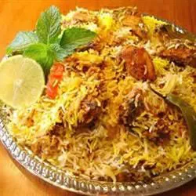

Biryani

Ingredients
- 2 ½ cups basmati rice
- 8 whole cloves
- 4 black cardamom pod
- 4 cinnamon sticks
ordered list
- Step
Place the basmati rice in a large container and cover with several inches of cool water; let stand 30 minutes. Drain.
- step
Heat 1/4 cup oil in a large skillet over medium heat; fry the cloves, cardamom pods, and cinnamon sticks in the hot oil until fragrant, about 1 minute. Add the onions; cook and stir until the onions are lightly browned, about 5 minutes. Stir the garlic paste and ginger paste into the onion mixture; cook until the garlic and ginger is fragrant, about 1 minute more. Sprinkle the cilantro and mint over the mixture and cook 1 minute more.
- step
Add the lamb chops to the skillet; season with salt. Cook and stir the lamb until the meat begins to brown, about 20 minutes.
- step
Stir the tomatoes, green chile peppers, and ground red pepper into the mixture; continue cooking until the oil begins to separate from the gravy, about 10 minutes. Add the yogurt and lemon juice; cover and cook until the lamb is tender, about 15 minutes. Add water as needed to keep the mixture from getting too dry.
- step
Bring the rice, 7 1/2 cups water, and 1 teaspoon salt to a boil in a saucepan until the rice is nearly done yet a little chewy, 10 to 15 minutes; drain any excess water.
- step
Layer about half the rice in the bottom of a deep pot with a lid. Spoon the lamb masala over the rice. Spread the fried onion over the lamb masala. Top with the remaining rice. Stir the saffron and warm milk together in a small bowl; pour over the top layer of rice. Cover the pot with the lid and place the pot over low heat; cook until the rice is thoroughly cooked, about 15 minutes.